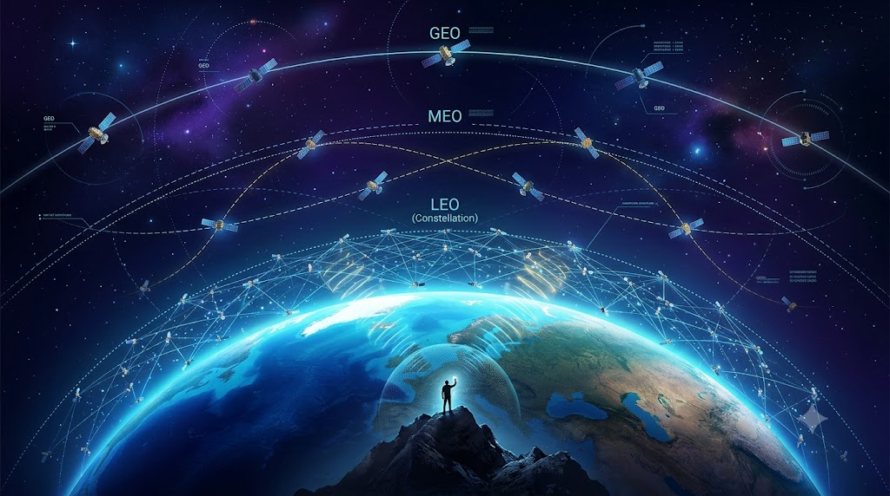
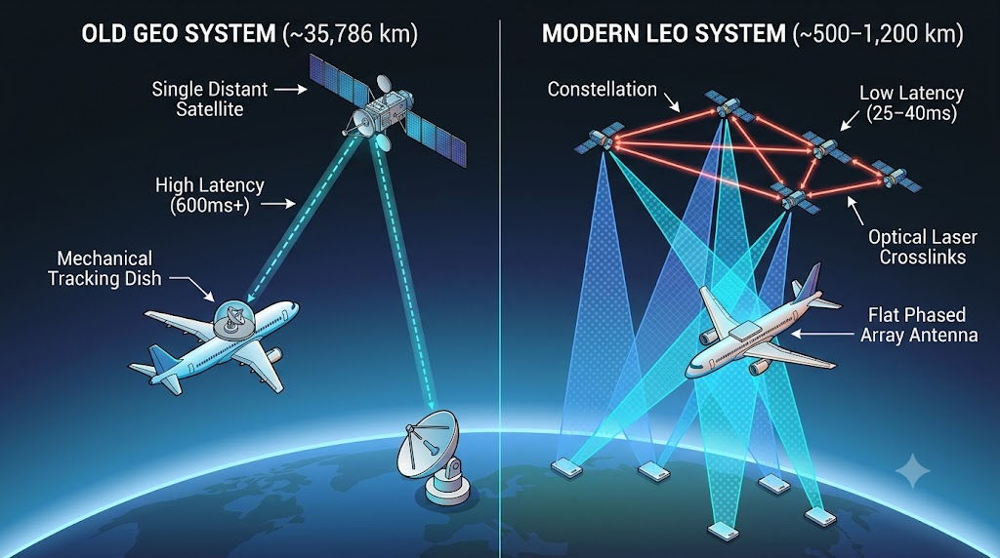
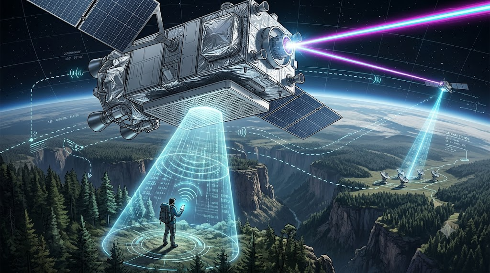
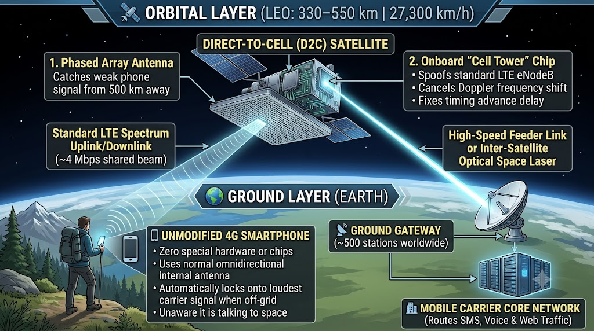

From Geostationary Giants to "Cell Towers in Space": The Complete Evolution of Satellite Internet & Direct-to-Cell 5G
Imagine standing on a remote mountain ridge or drifting miles offshore with zero cell towers in sight—yet your standard, unmodified smartphone quietly switches to a satellite overhead and sends a message. For decades, the promise of seamless space-based connectivity seemed perpetually out of reach, bogged down by $3,000 brick-sized satellite phones or painfully slow, overpriced airplane Wi-Fi.
Today, the convergence of reusable rockets, phased-array electronics, and Direct-to-Cell (D2C) / 5G NR-NTN (New Radio Non-Terrestrial Networks) has transformed orbital communications from an emergency luxury into an extension of everyday mobile networks.
This deep-dive blog post explores the complete journey of satellite communications—from the earliest Cold War relays and geostationary broadcasts to the orbital mechanics, protocol bottlenecks, and engineering breakthroughs powering today's Direct-to-Cell revolution.
1. The Dawn of Space Communications (1945–1990s)
Before a satellite could ever talk to a pocket-sized phone, engineers first had to prove that radio signals could bounce off orbit and return to Earth reliably.
Timeline of Early Milestones
- 1945 – The Clarke Orbit
Concept: Author and Royal Air Force officer Arthur C. Clarke published the foundational concept of placing three satellites in geostationary orbit to achieve global communication relay coverage.

- 1957 – Sputnik 1: The Soviet Union launched the world’s first artificial satellite, transmitting periodic radio pulses for three weeks and igniting the Space Age.
- 1960–1962 – Passive vs. Active Relays: NASA began with passive balloon reflectors (Echo I and II in 1960) before Bell Telephone Laboratories launched Telstar 1 (1962) into an elliptical Medium Earth Orbit (1,000 × 6,000 km). Operating at 4 and 6 GHz, Telstar 1 was the first active repeater satellite, completing over 500 telephone, telegraph, and live television transmissions.
- 1964–1965 – Geostationary Commercialization: Following the creation of COMSAT (1962) and INTELSAT (1964), Syncom 3 televised the 1964 Summer Olympics live across a third of the globe. In 1965, Early Bird (INTELSAT I) entered geosynchronous orbit over the Atlantic, providing 240 simultaneous voice circuits—nearly matching the capacity of every transatlantic undersea coaxial cable laid up to that point.
- 1979–1990 – Mobile Maritime & Land Pioneers: Inmarsat (established in 1979) made maritime satellite communications operational in 1982 and expanded to land-mobile and aeronautical trials by 1989–1990.
- The 1990s – Iridium’s First LEO Attempt: In the 1990s, Iridium launched a constellation of 66 Low Earth Orbit satellites to power handheld satellite phones. While a technical triumph, the commercial model collapsed because the handsets cost roughly \(3,000** and calls ran **\)7 per minute.
2. Why Terrestrial Cell Towers Can't Serve the Skies
To understand why satellite internet evolved the way it did, it helps to examine how a normal cell phone talks to Earth-based towers.
A smartphone’s internal antenna is omnidirectional—it broadcasts radio waves in all directions, communicates with several nearby cell towers simultaneously, and locks onto the strongest signal.
While many travellers assume cell phones don't work on airplanes simply because ground antennas point downward, the real culprit is speed and tower handoff:
- At low altitudes, a phone out of Airplane Mode can still catch signals from ground towers.
- However, because a commercial jet cruises at roughly 500 mph, a phone constantly jumps from one cell tower to the next.
- Multiply that rapid switching by 200 passengers on a single flight, and the aircraft triggers a massive flood of simultaneous handover requests.
- In the 1990s, the FCC banned in-flight cellular use not out of fear that phones would crash the plane’s avionics, but to prevent airliners from jamming every cellular tower underneath their flight path.
3. The Geostationary Era & "The Fatal Flaw" of Distance (2000s–2010s)
In 2004, Boeing launched Connexion by Boeing, the first service to bring real broadband internet to commercial aircraft. Priced at $15 to $30 for flat-rate unlimited access (roughly $25 to $50 in today's money), Connexion leased transponder space on the same types of satellites used by DirecTV and Dish Network. Lufthansa equipped 80 long-haul jets with the system in 2004, advertising full web browsing, email, and video calls at shared speeds of up to 20 Mbps down and 1 Mbps up.
The Physics of Geostationary Orbit (GEO)
Why did early satellite internet rely on satellites parked so far away? The answer lies in orbital mechanics:
- Falling Around the Earth: Gravity still pulls strongly on objects in space. To stay in orbit without falling back to Earth, a satellite must travel at an exact horizontal velocity matched to its altitude.
- The Speed-Altitude Tradeoff: The closer a satellite is to Earth, the faster it must travel to avoid falling in. At an altitude of 2,000 km, a satellite must travel at roughly 24,800 km/h, lapping the Earth 11 times a day.
- The Geostationary Sweet Spot: Early ground stations used fixed satellite dishes pointing at a single spot in the sky. To appear completely stationary ("landlocked") relative to the spinning Earth, a satellite must orbit at the exact altitude where its orbital period matches Earth’s 24-hour rotation. That only happens at one specific altitude: 35,786 km (22,236 miles) above Earth, moving at 11,000 km/h.
With just three GEO satellites, operators could cover nearly the entire inhabited planet (excluding the poles). Aircraft simply mounted a motorized tracking dish inside a dome on top of the fuselage that physically tilted and swiveled to stay locked onto that single satellite.

The 140,000-Kilometer Latency Bottleneck
While GEO solved coverage, it introduced a crippling physics bottleneck: the speed of light over vast distances.
[Passenger Device]
│
▼ (1) ~35,786 km Uplink
[GEO Satellite in Space]
│
▼ (2) ~35,786 km Downlink
[Ground Station] ──► [Internet Server] ──► [Ground Station]
│
▼ (3) ~35,786 km Return Uplink
[GEO Satellite in Space]
│
▼ (4) ~35,786 km Return Downlink
[Passenger Device]
───────────────────────────────────────────────────────────
Total Distance: ~140,000+ km per round-trip ping
Minimum Physical Latency: ~450–500 ms (often spiking to 3,000+ ms)
Every single click or packet had to travel 35,000+ km up to the satellite, 35,000+ km down to a ground gateway, across terrestrial fiber to a web server, and 70,000+ km back via the satellite—a 140,000 km journey. Even at the speed of light, that round trip requires 450 to 500 milliseconds at minimum, often spiking past 3,000 milliseconds.
Worse still, modern internet protocols are not built for 1-second delays:
- TCP 3-Way Handshakes: Require three back-and-forth exchanges (~900 ms before a single byte of content transfers).
- HTTPS Encryption: Adds at least one extra security handshake round-trip (~1 additional second).
- Corporate VPNs: Send frequent "are you still there?" keep-alive checks every few seconds; when GEO latency delays the reply, the VPN assumes the connection dropped and terminates the session.
Combined with massive launch costs—it cost $20,000 to \(35,000 per kilogram** to reach orbit, making a 3,000–4,000 kg GEO satellite cost **\)60M to $130M per launch—Boeing shut down Connexion in 2006 after falling far short of its $3.5 billion annual revenue projection. Successors in the 2010s like Viasat (offering higher capacity of ~12 Mbps per passenger) and Panasonic Avionics (stitching together leased GEO capacity) improved bandwidth, but remained trapped by the same 35,786 km latency barrier.
4. The Stepping Stone: O3b and Medium Earth Orbit (MEO)
In the late 2000s and early 2010s, O3b Networks (standing for the "Other 3 Billion" people without stable internet) pioneered a middle-ground architecture using Medium Earth Orbit (MEO).
- By the end of 2014, O3b operated 12 satellites much closer to Earth (roughly 8,000 km altitude) equipped with steerable antennas.
- The Breakthrough: O3b proved that bringing satellites closer to Earth dramatically cut latency.
- The Limitation: Because O3b’s satellites orbited strictly around the equator, their signal only reached central and lower latitudes—leaving high-latitude regions like Canada, Scandinavia, Russia, and the Falklands out of reach. Furthermore, the terminals were still large enterprise/backhaul systems rather than consumer or mobile devices.
5. The LEO Mega-Constellation Revolution
To make satellite internet feel like terrestrial broadband—and eventually reach pocketsized phones—satellites had to move into Low Earth Orbit (LEO) at altitudes between 330 km and 550 km. At this close range, the physical round-trip propagation delay drops from ~500 ms down to roughly 2 ms (with total end-to-end transparent network round-trip times typically sitting between 8 ms and 20 ms).
However, operating in LEO introduces three massive engineering hurdles:
- Blistering Orbital Speeds: At 550 km, a satellite must travel at 27,300 km/h (and even faster at 330 km), completing a full lap around Earth every 91 minutes. A satellite crosses the entire visible sky from horizon to horizon in just 3 to 5 minutes.
- Tiny Coverage Footprints: Because a LEO satellite is so close to the curvature of the Earth, it can only see a circular footprint roughly 1,300 km in diameter at any moment.
- Constellation Scale: While 3 satellites can cover the planet from GEO, LEO requires thousands of satellites so that as one zips below the horizon, another immediately takes its place. (OneWeb attempted to launch 650 LEO satellites, but ran out of funding during the COVID-19 pandemic after launching 70 before later restructuring.)
How SpaceX Solved the Economics and Geometry
SpaceX made mega-constellations viable by vertically integrating reusable Falcon 9 boosters, slashing launch costs tenfold from ~\(30,000/kg to ~\)3,000/kg. Each launch deploys roughly 29 large satellites or ~60 smaller ones, allowing Starlink to scale to ~11,000 satellites in orbit serving over 12 to 13.6 million subscribers across 160 countries.
To ensure global coverage—including polar regions—Starlink organizes its satellites into 8 distinct orbital shells at varying inclinations:
- 53° Shell: Covers the densely populated band within ±55° latitude.
- 70° Shell: Extends coverage to northern and southern high latitudes.
- 97° Polar Shell: Flies nearly vertically over the poles so Canada, Scandinavia, and Antarctica receive continuous service.
Phased Array Antennas & Space Lasers
Because no mechanical dish can swing back and forth every 3 minutes without wearing out, LEO networks rely on Electronically Steered Phased Array Antennas:
- On the Ground: A flat user terminal contains hundreds of tiny antenna elements that combine radio waves to steer the beam electronically up to 50° off-center with zero moving parts, switching from one passing satellite to the next every 15 seconds.
- On the Satellite: Each satellite carries a phased array that projects up to 48 simultaneous spot beams (each 25 to 50 km wide on the ground), delivering consumer broadband speeds up to 400 Mbps down and 40 Mbps up.
- Inter-Satellite Optical Lasers: When a user is in the middle of the ocean or Antarctica—outside the 1,300 km reach of Starlink's ~500 global ground stations—the satellite fires a laser beam across the vacuum of space to relay data from satellite to satellite until it reaches a spacecraft sitting over a ground gateway. Because light travels faster in the vacuum of space than through glass fiber, laser-relayed connections to remote islands like Réunion in the Indian Ocean can actually achieve lower latency than undersea fiber-optic cables.
6. Direct-to-Cell (D2C) & 5G NR-NTN: How Unmodified Phones Talk to Space
While a pizza-box-sized phased array dish works great on a rooftop, RV, or airliner, you cannot fit a high-powered phased array onto a standard smartphone. Yet Direct-to-Cell (D2C) services now allow everyday LTE and 5G phones to connect directly to satellites.

The Core Engineering Problem
Connecting an unmodified smartphone to a satellite 330–550 km overhead requires solving three brutal physical constraints:
- Link Budget & Path Loss: A smartphone has a tiny omnidirectional antenna and transmits at fractions of a watt, designed for a cell tower 2 km away—not 500 km in space.
- Severe Doppler Shift: Because a LEO satellite hurtles across the sky at 27,300 km/h, the radio waves compress as the satellite approaches and stretch as it recedes, shifting the carrier frequency far beyond what terrestrial 4G/5G towers normally tolerate.
- Timing Advance (Propagation Delay): Standard LTE/5G protocols expect signals to arrive back at the tower within microseconds. A 500 km journey introduces milliseconds of delay that change every second as the satellite’s elevation angle changes, causing standard cellular handshakes to time out and fail.
Generation 1: Network-Side Compensation ("A Cell Tower in Space")
To make legacy, unmodified 4G LTE phones work without any hardware or chip changes, operators like Starlink Direct to Cell, AST SpaceMobile, and Lynk Global moved the entire burden of compensation onto the satellite itself:
flowchart TB
subgraph SPACE["🛰️ SPACE LAYER (Low Earth Orbit: ~330–550 km)"]
direction TB
ANT["<b>Giant High-Gain Phased Array Antenna</b><br/>Captures weak omnidirectional phone signals"]
MODEM["<b>Onboard eNodeB Silicon / Modem</b><br/>• Emulates a standard terrestrial Cell Tower<br/>• Pre-compensates for Doppler Shift (27,300 km/h)<br/>• Cancels out Timing Delay (~2–20 ms)"]
LASER["<b>Optical Inter-Satellite Laser / Feeder</b><br/>Routes packets to nearest visible gateway"]
ANT --> MODEM --> LASER
end
subgraph AIR["📡 AIR INTERFACE (330–550 km Path)"]
UL["<b>Uplink / Downlink</b><br/>Standard Terrestrial LTE Spectrum<br/><i>(~4 Mbps shared beam capacity)</i>"]
FL["<b>Feeder Link</b><br/>High-Capacity RF / Laser Relay"]
end
subgraph GROUND["🌍 GROUND LAYER (Earth)"]
direction LR
PHONE["📱 <b>Standard Unmodified 4G Phone</b><br/>• Uses normal internal antenna<br/>• Zero hardware/chip changes<br/>• Thinks it's talking to a ground tower"]
GW["📡 <b>Ground Gateway Station</b><br/>Receives orbital feeder link"]
CORE["🏢 <b>Mobile Carrier Core Network</b><br/>(e.g., T-Mobile, KDDI, Entel)<br/>Routes SMS, Voice & Data to Internet"]
GW --> CORE
end
PHONE <==>|"Weak Omnidirectional Signal"| UL
UL <==> ANT
LASER ==> FL
FL ==> GW
%% High-Contrast Monochrome Styling (Black text on White/Light-Gray backgrounds)
classDef layerFill fill:#f4f4f4,stroke:#000000,stroke-width:2px,color:#000000
classDef airFill fill:#ffffff,stroke:#444444,stroke-width:1.5px,stroke-dasharray: 5 5,color:#000000
classDef nodeBox fill:#ffffff,stroke:#000000,stroke-width:1.5px,color:#000000
class SPACE,GROUND layerFill
class AIR airFill
class ANT,MODEM,LASER,UL,FL,PHONE,GW,CORE nodeBoxsequenceDiagram
autonumber
participant Phone as 📱 Unmodified 4G Phone
participant Sat as 🛰️ D2C LEO Satellite (eNodeB)
participant GW as 📡 Ground Gateway
participant Carrier as 🏢 Carrier Core / Internet
Note over Phone: Out of terrestrial cell tower range.<br/>Scans carrier LTE frequencies.
Sat->>Phone: Broadcasts standard LTE cell signal from 330–550 km
Note over Phone: Detects satellite as the "loudest" cell tower
Phone->>Sat: Transmits weak omnidirectional LTE handshake
Note over Sat: Onboard Silicon calculates orbital speed (27,300 km/h)<br/>& cancels Doppler Shift + Timing Delay
Sat->>GW: Relays compensated packets via Optical Laser / Feeder Link
GW->>Carrier: Connects to Mobile Carrier Core Network
Carrier-->>GW: Returns SMS / Voice / App Data
GW-->>Sat: Uplinks response to satellite
Note over Sat: Pre-shifts frequency & timing for the phone
Sat-->>Phone: Delivers standard LTE signal (~4 Mbps beam)- How It Works: When you walk out of terrestrial cell tower range, your phone automatically scans for the loudest cellular signal on its carrier’s frequencies. The D2C satellite carries a high-sensitivity phased-array antenna and custom silicon that spoofs a standard terrestrial cell tower (eNodeB).
- Satellite-Side Math: Because the satellite knows its own exact orbital velocity and altitude, its onboard processor pre-calculates and cancels out the Doppler frequency shift and timing delay before relaying the signal, tricking the phone into thinking it is talking to a stationary tower down the street.
- Real-World Speeds: Because legacy phones cannot assist with beam tracking and share a wide satellite cell beam, current first-generation D2C services deliver roughly 4 Mbps to 6.2 Mbps per beam—more than enough for SMS messaging, location sharing, voice calls, and basic apps (like maps and weather), though not built for 4K video streaming.
Generation 2: 3GPP NR-NTN (New Radio Non-Terrestrial Networks)
While Generation 1 bridges the gap for older phones, the future of satellite 5G is standardized under 3GPP Release 17 and Release 18 as NR-NTN (New Radio Non-Terrestrial Networks).
Instead of leaving the phone "blind" to the satellite's motion, NR-NTN makes the smartphone an active participant in orbital physics:
┌────────────────────────────────────────────────────────────────────────┐
│ GENERATION 2: 3GPP 5G NR-NTN STANDARD │
│ (Next-Gen Smartphones with NTN Modem Support) │
├────────────────────────────────────────────────────────────────────────┤
│ │
│ 1. Satellite broadcasts Ephemeris Data (SIB19 flight path) │
│ 2. Phone uses onboard GNSS (GPS) + Satellite Ephemeris to │
│ calculate relative angle, distance, and velocity │
│ 3. Phone PRE-COMPENSATES Timing Advance & Doppler Shift │
│ BEFORE transmitting its radio burst to space! │
└────────────────────────────────────────────────────────────────────────┘
- Ephemeris Broadcasts (SIB19): Under 3GPP NR-NTN, the satellite broadcasts System Information Block 19 (
SIB19), which tells the phone the satellite’s exact orbital coordinates and flight path (ephemeris data) alongside default timing delays. - Phone-Side Pre-Compensation: Using its own GPS/GNSS location and the satellite's flight path data, the phone itself calculates the exact timing advance and Doppler frequency offset and cancels them out before it transmits a packet.
- Massive Speed Boost: By synchronizing the handset and satellite across dedicated 5G NTN bands (such as L-band, S-band, and n252), theoretical NR-NTN speeds jump to up to 100 Mbps.
7. Comparison of Orbital Architectures & Market Players
Orbital Comparison Table
| Metric / Feature | Geostationary Orbit (GEO) | Medium Earth Orbit (MEO) | Low Earth Orbit (LEO Broadband) | LEO Direct-to-Cell (D2C / NR-NTN) |
|---|---|---|---|---|
| Altitude | 35,786 km | ~8,000 – 20,000 km | 330 – 550 km | 330 – 600 km |
| Orbital Speed | ~11,000 km/h | ~14,000 – 18,000 km/h | ~27,300+ km/h | ~27,300+ km/h |
| Round-Trip Latency | ~450 – 500+ ms | ~120 – 150 ms | ~2 ms physical (~20 ms network) | ~2 – 20 ms |
| Satellites Needed | 3 for global coverage (excl. poles) | 12 – 30+ (often equatorial) | Thousands (e.g., ~11,000) | Hundreds to Thousands |
| User Hardware | Large fixed or mechanical tracking dish | Dual steerable enterprise dishes | Flat electronic phased array dish | Standard unmodified smartphone |
| Typical Speeds | 20 Mbps per plane (2004) to 100+ Mbps | Enterprise backhaul (Gbps) | Up to 400 Mbps down / 40 Mbps up | ~4 Mbps (Gen 1 D2C) to 100 Mbps (NR-NTN) |
The Current Direct-to-Cell Competitive Landscape (2025–2026)
The global Direct-to-Device (D2D) / Satellite-to-Cell ecosystem has moved from experimental tests to commercial rollouts across multiple continents:

- SpaceX (Starlink Direct to Cell / Starlink Mobile):
- Validated its first SMS texts over T-Mobile spectrum on unmodified phones in January 2024 and launched commercial Direct-to-Cell messaging in the U.S. and New Zealand in February 2025, followed by data support for essential apps with KDDI in Japan (August 2025) and Latin American carriers (including Peru and Costa Rica).
-
In October 2026, SpaceX announced the acquisition of nationwide 800 MHz spectrum from Grain Management to expand Starlink Mobile capabilities.
-
AST SpaceMobile:
- Builds massive orbital phased-array unfolds ("BlueBird" satellites) designed to deliver broadband voice and data directly to standard 4G/5G phones.
-
Signed a definitive commercial agreement with AT&T (through 2030), partnered with Verizon, and formed a joint European D2D service venture with Vodafone in March 2025.
-
Apple & Globalstar:
-
Pioneered mass-market consumer adoption in November 2022 with a $450 million investment into Globalstar’s L/S-band constellation to power Emergency SOS via Satellite and roadside/off-grid messaging on iPhones.
-
Lynk Global:
-
Demonstrated the earliest "cell-tower-in-space" SMS transmissions to standard phones and focuses on partnering with Mobile Network Operators (MNOs) across island nations and rural regions.
-
Amazon LEO (Project Kuiper):
- Developing a multi-thousand-satellite LEO constellation to compete directly with Starlink in consumer, aviation, and cellular backhaul markets.
8. Reality Check: Will Satellite 5G Replace Terrestrial Towers?
With satellites now talking directly to smartphones, is it time to cancel your home fiber and terrestrial mobile plan? Not quite.
- Physics Favors Fiber and Ground Towers in Cities: A single Starlink beam covers an area 25 to 50 km wide and shares roughly 4 Mbps (D2C) to a few hundred Mbps (dish) among every active user inside that circle. In a dense city like Bengaluru, New York, or Tokyo, a single terrestrial 5G tower handles gigabits of traffic every second for a few city blocks, backed by virtually unlimited fiber-optic capacity.
- Indoor Penetration: Satellite signals traveling hundreds of kilometers from space arrive with very low power and struggle to penetrate concrete roofs, urban canyons, and multi-story buildings.
- The Roaming Myth: While travelers often dream of satellite internet eliminating international roaming charges, the barrier to global roaming isn't a lack of cell towers on Earth—it is carrier pricing. Affordable international eSIMs and regional agreements (like EU roam-like-at-home rules) already solve cross-border connectivity in populated areas far more efficiently than launching rockets into orbit.
The True Verdict
Direct-to-Cell satellite 5G is not a replacement for terrestrial networks—it is the ultimate safety net. By turning Low Earth Orbit into a seamless fallback layer, Direct-to-Cell ensures that whether you are hiking in a remote rainforest, sailing across an ocean, or navigating a natural disaster that knocked out ground infrastructure, dead zones are finally becoming a thing of the past.